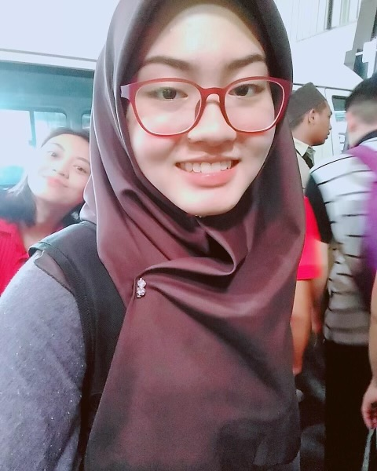

NABILAH ARABI

SUMMARY
Diploma in Electrical & Electronic Engineering graduate with a year of
Customer Service Representative experience, excelling in sales and tech
support. Additionally, 1.5 years as an Executive - Immigration Liaison
specializing in vetting, submitting, and following up on foreign student
visa applications. Proven results, strong work ethic, and
commitment. Seeking a role to leverage my skills and energetic drive.
EDUCATIONS
Kuching Polytechnic
- Diploma in Electrical & Electronic Engineering
- President of POLIKU Newscasting
EXPERIENCES
- Practical Training - Bakun Hydroelectric Power Plant
07/2019-11/2019
- The training was under Protection, Control & Instrumentation (PCI)
department.
- To work with automated processes with the goal of improving
the productivity, reliability, safety and stability of the systems.
- Responsible forintegrating the sensors with the recorders,
transmitters, displays or control systems.
- Responsible for calibration, testing and maintenance of the system.
- Customer Service Representative - TM Point
01/2020-12/2020
- To assist Outlet Manager in managing performance of sales and
service to customer.
- To assist in managing customer experience standards.
- To assist outlet manager in strategies and plan for improvement of
sales, service and save of the outlet.
- Excecutive-Immigration Liaison - Scicom MSC Berhad
07/2022-Current
- To be the point of escalation/contact between Immigration
Department, operations and institutions.
- To do submission ofstudents' VAL applications/documents that are
required by the Immigration Department for the issuance of eVAL
and Student Pass.
- To vet foreign student's Visa Approval Letter (VAL) applications
thoroughly.
- To monitor and follow up on the application process, ensuring
smooth and timely operations for the Sarawak application.
SKILLS HIGHLIGHTS
- Circuit wiring ★☆☆☆
- AutoCAD ★☆☆☆
- MATLAB ★☆☆☆
- PSpice ★☆☆☆
- C++ Programming ★☆☆☆
- Microsoft Office ★★★☆
LANGUAGE
- Bahasa Malaysia
- English
ACHIEVEMENTS
- Participated in Project Showcase & Innovation Festival representing
group project in Augmented Reality
- Champion of News Casting Competition in Malaysian Polytechnic
English Language Festival (MPEF) 2018
- Top 10 in News Casting Competition in International Asian English
Olympics 2019 at BINUS University Jakarta, Indonesia
Other
My Hobbies